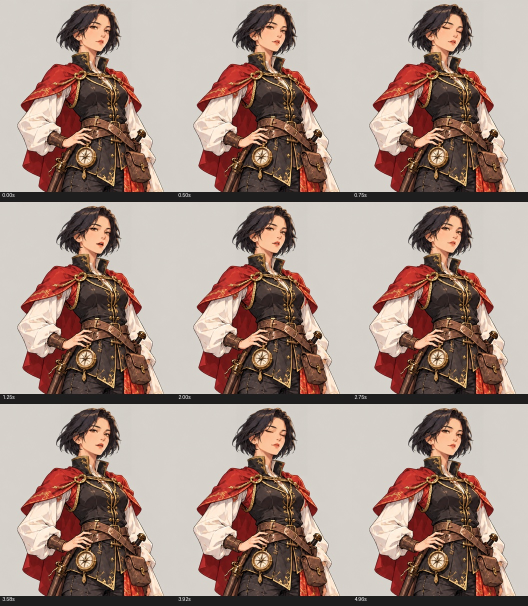

固定立绘、参数控制嘴型与表情、小幅身体浮动。5 秒循环 · 704 × 768 · 24 fps。
约 2.6 像素上下浮动、不到 1° 的头部微动、两次眨眼，以及带停顿的嘴型开合；嘴型控制幅度为初版的 1.7 倍。
动作参考取人物对话段；菜单切换和片尾不参与制作。
本版没有配音，嘴型是说话节奏演示，不是语音同步。手臂保持原来的姿势。面部仍由 LivePortrait 重建，局部细节可能有轻微柔化。

逐帧验证 · 动作参数时间轴 · 制作与 Unity 使用说明